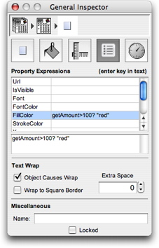
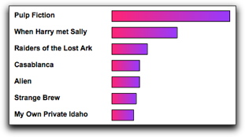

| Data
Driven Graphics Attributes

For any
text, box, or line (or anything really) on a page, ReportMill lets
you easily configure visual attributes, like color, text-color,
font, stroke, size, location, etc. In fact, ReportMill lets you set
more graphics design attributes than any other reporting package.
One of
the most exciting advanced reporting features that ReportMill introduces
is the unique ability to set most
of these attributes dynamically based on conditions in the report dataset.
This feature is accessed by selecting any individual shape in conjunction
with the Shape General inspector.
In the example to the right, we have configured a given shape to have
a red background if the value of getAmount is greater than 100.
Colors
Included
in the list of attributes are the following color attributes:
- FillColor
- the background color of the selected box, text, etc.
- StrokeColor
- the color of the border of the selected shape.
- FontColor
- the color of the text in the selected shape.
The valid
values of this attribute are any statically defined color name in Java.awt.Color
presented as a string literal (case-insensitive), like "red", "green",
"blue", "lightgray", etc. Additionally, colors
may be provided in HTML hexadecimal style: "#FFA8C2". Hint:
use the ReportMill color panel RGB
sliders pane to get an exact HTML color string.
Fonts
Also included
is the "Font" attribute. Valid values for this include the
simple case-insensitive string literal descriptors "bold" and "italic".
You can also describe a font in terms of its name and size, like "Arial
Bold 12" or "Courier Italic 14".
URL
A powerful
facility, used for things like DrillDown functionality, is the URL
property. This can simply be a static string, like: http://abc.com.
Or it can contain keys like:
http://abc.com/GetReport.jsp?type="Customer":id=@getCustomerId@
IsVisible
Sometimes
its handy to have an element that isn't even visible if a given condition
is met. For instance, a text field with "Number of Children: @getChildrenCount@"
might have the following property expression:
IsVisible getChildrenCount>0
Placement

Another
fun one is playing with the placement of a shape. In particular, you
can build an impromptu bar chart in a table by setting its width dynamically
to a ratio (times a default width). For instance, a group of movies
might show their relative revenues with a key like this:
getRevenue/Up.max.getRevenue*200
|